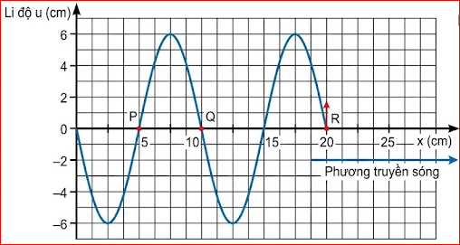
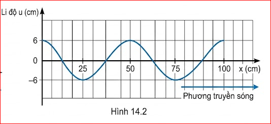

Có thể sử dụng mối liên hệ nào để xác định các đại lượng \( \lambda \), \( v \), \( f \), \( T \)?
Gợi ý trả lời:
Ta có thể sử dụng các công thức liên hệ cơ bản sau đây:
Ví dụ 1:
Một sóng âm có tần số 192 Hz và truyền đi được quãng đường 91,4 m trong 0,27 s. Hãy tính:
Giải:
a) \( v = \frac{s}{t} = \frac{91,4}{0,27} = 338,5 \, m/s \)
b) Sử dụng công thức \( v = \lambda f \)
\( \Rightarrow \lambda = \frac{v}{f} = \frac{338,5}{192} = 1,76 \, m \)
c) \( \lambda' = \frac{v}{f'} = \frac{338,5}{442} = 0,77 \, m \)
\( T' = \frac{1}{f'} = \frac{1}{442} \approx 0,002 \, s \)
Ví dụ 2:
Trong thí nghiệm Hình 8.1, cần rung dao động với tần số 50 Hz. Người ta đo được bán kính của 2 gợn sóng hình tròn liên tiếp lần lượt bằng: 12,4 cm và 14,3 cm. Tính tốc độ truyền sóng.
Giải:
Bước sóng là khoảng cách giữa hai gợn sóng liên tiếp, theo đề bài ta có:
\( \lambda = 14,3 - 12,4 = 1,90 \, cm \)
Áp dụng công thức \( v = \lambda f \), tính tốc độ truyền sóng:
\( v = 1,9 \cdot 50 = 95 \, cm/s \)
Ví dụ 3:
Một sóng hình sin đang lan truyền từ trái sang phải trên một dây dài. Hình 14.1 là hình ảnh của sóng ở một thời điểm xét. Cho biết tốc độ truyền sóng \( v = 1 \, m/s \).

Hình 14.1
Giải:
a)
Từ đồ thị ta được \( \lambda = 10 \, cm = 0,1 \, m \)
Sử dụng công thức: \( \lambda = \frac{v}{f} \)
Ta suy ra tần số của sóng: \( f = \frac{v}{\lambda} = \frac{1}{0,1} = 10 \, Hz \)
b)
Căn cứ vào sóng lan truyền tới, điểm R bắt đầu đi lên.
- Điểm Q cách R đúng một bước sóng nên dao động cùng pha. Do vậy, tại điểm Q sóng phải bắt đầu chuyển động đi lên.
- Điểm P cách R 1,5 lần bước sóng nên dao động ngược pha. Do vậy, tại điểm P sóng phải bắt đầu chuyển động đi xuống.
- (Nếu có điểm khác cách R hai bước sóng thì dao động cùng pha, chuyển động đi lên).
Ví dụ 4:
Trong một thí nghiệm về giao thoa ánh sáng với hai khe Y-âng, khoảng cách giữa hai khe hẹp là \( a = 2 \, mm \), khoảng cách giữa mặt phẳng chứa hai khe với màn quan sát là \( D = 1,2 \, m \). Khe sáng hẹp phát đồng thời hai bức xạ đơn sắc màu đỏ \( \lambda_1 = 0,66 \, \mu m \) và màu lục \( \lambda_2 = 0,55 \, \mu m \).
Giải:
a)
Với ánh sáng đỏ \( \lambda_1 = 0,66 \, \mu m \):
\( i_1 = \frac{\lambda_1 D}{a} = \frac{0,66 \cdot 10^{-3} \cdot 1,2 \cdot 10^3}{2} \approx 0,40 \, mm \)
Với ánh sáng lục \( \lambda_2 = 0,55 \, \mu m \):
\( i_2 = \frac{\lambda_2 D}{a} = \frac{0,55 \cdot 10^{-3} \cdot 1,2 \cdot 10^3}{2} = 0,33 \, mm \)
b)
Vân chính giữa ứng với \( k = 0 \) là chung cho cả hai bức xạ, tức là tại đó cả hai bức xạ đều cho vân sáng và vân có màu là màu hỗn hợp của màu đỏ và màu lục, tức là màu vàng - da cam.
Vân đầu tiên cùng màu với vân này ở tại điểm A và cách tâm O của vân chính giữa một khoảng \( x = OA \) sao cho: \( k_1 i_1 = k_2 i_2 \) với \( k \in \mathbb{Z} \).
Ta nhận thấy \( 6k_1 = 5k_2 \) (do \( \frac{i_1}{i_2} = \frac{0,40}{0,33} \approx \frac{40}{33} \)... Lưu ý: theo sách giáo khoa tính toán có thể làm tròn \(i_1=0.396 \approx 0.4\), tỉ lệ chính xác \( \frac{\lambda_1}{\lambda_2} = \frac{0.66}{0.55} = \frac{6}{5} \), suy ra \( 5i_1 = 6i_2 \), văn bản có thể có sai sót nhỏ đoạn tỉ lệ, chuẩn là \( 5k_1 = 6k_2 \) ). Theo văn bản gốc: Ta nhận thấy \( 6k_1 = 5k_2 \).
Do vậy, giá trị nhỏ nhất của \( k_1 \) là 5 và của \( k_2 \) là 6, tức là:
\( OA = 0,40 \cdot 5 = 2,00 \, mm \) (hoặc tính theo \(0,33 \cdot 6 = 1,98 \, mm\))
Bài 1:
Một lò xo có chiều dài 1,2 m, đầu trên gắn vào một nhánh âm thoa, đầu dưới treo một quả cân. Dao động của âm thoa được duy trì bằng một nam châm điện để có tần số 50 Hz. Khi đó, trên lò xo có sóng dừng và trên lò xo chỉ có một nhóm vòng dao động với biên độ cực đại. Tính tốc độ truyền sóng trên lò xo.
Hướng dẫn giải:
- Lò xo có đầu trên gắn âm thoa, đầu dưới treo quả cân nên đây là trường hợp sóng dừng trên dây có hai đầu cố định.
- Trên lò xo chỉ có 1 nhóm vòng dao động biên độ cực đại, nghĩa là chỉ có 1 bụng sóng \( \Rightarrow k = 1 \).
- Điều kiện sóng dừng trên dây 2 đầu cố định:
\( l = k \frac{\lambda}{2} \Rightarrow 1,2 = 1 \cdot \frac{\lambda}{2} \Rightarrow \lambda = 2,4 \, m \)
- Tốc độ truyền sóng:
\( v = \lambda f = 2,4 \cdot 50 = 120 \, m/s \)
Bài 2:
Một sóng hình sin được mô tả như Hình 14.2.

Hình 14.2
Hướng dẫn giải:
a) Dựa vào đồ thị (Hình 14.2), khoảng cách giữa hai đỉnh sóng liên tiếp (hoặc 3 nút sóng liên tiếp) là một bước sóng. Ta thấy từ tọa độ \( x=0 \) đến \( x=50 \, cm \) là một chu kì không gian.
\( \Rightarrow \lambda = 50 \, cm = 0,5 \, m \).
b) Chu kì \( T = 1 \, s \).
- Tần số: \( f = \frac{1}{T} = \frac{1}{1} = 1 \, Hz \)
- Tốc độ truyền sóng: \( v = \lambda f = 0,5 \cdot 1 = 0,5 \, m/s \)
c) Tần số mới \( f' = 5 \, Hz \), tốc độ \( v = 0,5 \, m/s \) không đổi.
- Bước sóng mới: \( \lambda' = \frac{v}{f'} = \frac{0,5}{5} = 0,1 \, m = 10 \, cm \)
- Đồ thị \( (u-x) \) lúc này sẽ bị "nén" lại trên trục Ox. Cứ mỗi đoạn \( 10 \, cm \) trên trục Ox sẽ chứa trọn vẹn 1 hình sin (1 bước sóng). Biên độ sóng (trục u) giữ nguyên.
Bài 3:
Trong một thí nghiệm Y-âng về giao thoa ánh sáng, hai khe được chiếu bằng ánh sáng đơn sắc. Khoảng cách giữa hai khe là 0,6 mm. Khoảng vân trên màn quan sát đo được là 1 mm. Từ vị trí ban đầu, nếu tịnh tiến màn quan sát một đoạn 25 cm lại gần mặt phẳng chứa hai khe thì khoảng vân mới trên màn là 0,8 mm. Tính bước sóng của ánh sáng dùng trong thí nghiệm.
Hướng dẫn giải:
Ta có các dữ kiện: \( a = 0,6 \, mm = 0,6 \cdot 10^{-3} \, m \).
Trạng thái 1: Khoảng vân \( i_1 = \frac{\lambda D}{a} = 1 \, mm = 10^{-3} \, m \) (1)
Trạng thái 2: Tịnh tiến màn lại gần 25 cm \( \Rightarrow D' = D - 0,25 \).
Khoảng vân mới: \( i_2 = \frac{\lambda (D - 0,25)}{a} = 0,8 \, mm = 0,8 \cdot 10^{-3} \, m \) (2)
Lập tỉ số (1) và (2):
\( \frac{i_1}{i_2} = \frac{D}{D - 0,25} \Rightarrow \frac{1}{0,8} = \frac{D}{D - 0,25} \)
\( \Rightarrow 1 \cdot (D - 0,25) = 0,8D \Rightarrow 0,2D = 0,25 \Rightarrow D = 1,25 \, m \).
Từ (1), tính được bước sóng:
\( \lambda = \frac{i_1 a}{D} = \frac{10^{-3} \cdot 0,6 \cdot 10^{-3}}{1,25} = 0,48 \cdot 10^{-6} \, m = 0,48 \, \mu m \).
1. Giao thoa ánh sáng (Tính vị trí vân sáng)
Trong thí nghiệm Y-âng, \( a = 1 \, mm \), \( D = 2 \, m \). Ánh sáng dùng có bước sóng \( \lambda = 0,5 \, \mu m \). Xác định vị trí vân sáng bậc 3 trên màn.
Giải:
Khoảng vân: \( i = \frac{\lambda D}{a} = \frac{0,5 \cdot 10^{-6} \cdot 2}{1 \cdot 10^{-3}} = 1 \cdot 10^{-3} \, m = 1 \, mm \).
Vị trí vân sáng bậc 3 (\( k = \pm 3 \)):
\( x_3 = \pm 3i = \pm 3 \cdot 1 = \pm 3 \, mm \).
2. Truyền sóng cơ học
Một người quan sát sóng trên mặt hồ thấy khoảng cách giữa 5 ngọn sóng liên tiếp là 12 m và có 6 ngọn sóng đi qua trước mặt trong 10 s. Tính tốc độ truyền sóng.
Giải:
Khoảng cách giữa 5 ngọn sóng (đỉnh sóng) liên tiếp tương ứng với 4 bước sóng:
\( 4\lambda = 12 \, m \Rightarrow \lambda = 3 \, m \).
Có 6 ngọn sóng đi qua trong 10 s, tương ứng với 5 chu kì:
\( 5T = 10 \, s \Rightarrow T = 2 \, s \).
Tốc độ truyền sóng: \( v = \frac{\lambda}{T} = \frac{3}{2} = 1,5 \, m/s \).
3. Sóng dừng trên dây
Một sợi dây AB dài 1,5 m căng ngang. Đầu B cố định, đầu A gắn vào một nhánh âm thoa dao động với tần số 40 Hz. Biết trên dây có sóng dừng với 3 bụng sóng. Tính vận tốc truyền sóng trên dây.
Giải:
Vì hai đầu A, B coi như cố định, điều kiện sóng dừng là \( l = k\frac{\lambda}{2} \).
Số bụng sóng bằng \( k \Rightarrow k = 3 \).
\( 1,5 = 3 \cdot \frac{\lambda}{2} \Rightarrow \lambda = 1 \, m \).
Vận tốc truyền sóng: \( v = \lambda \cdot f = 1 \cdot 40 = 40 \, m/s \).